Neural PDE surrogates can improve the cost–accuracy trade-off of classical solvers, but often generalize poorly to new initial conditions and accumulate errors over time. Physical and symmetry constraints have shown promise in closing this performance gap, but existing techniques for imposing these inductive biases are incompatible with the staggered grids commonly used in computational fluid dynamics. Here we introduce novel input and output layers that respect physical laws and symmetries on staggered grids, and for the first time systematically investigate how these constraints, individually and in combination, affect the accuracy of PDE surrogates. We focus on two challenging problems: shallow water equations with closed boundaries and decaying incompressible turbulence. Compared to strong baselines, symmetries and physical constraints consistently improve performance across tasks, architectures, autoregressive prediction steps, accuracy measures and network sizes. Symmetries are more effective than physical constraints, but surrogates with both performed best, even compared to baselines with data augmentation or pushforward training, while themselves benefiting from the pushforward trick. Doubly constrained surrogates also generalize better to initial conditions and durations beyond the range of the training data, and more accurately predict real-world ocean currents.
We consider time-dependent fields w(t, x) of a fluid system, governed by partial differential equations (PDEs) of the general form
∂tw = F(t, x, w, ∇w, ∇2w, …),
together with initial and boundary conditions, where t denotes time and x space. A neural surrogate learns an update operator G that advances the discretized fields by one time step,
w(t + Δt, ·) = G[w(t, ·)],
and is applied autoregressively to predict the long-term evolution. Training data and reference solutions are generated with a numerical solver on space- and time-discretized fields.
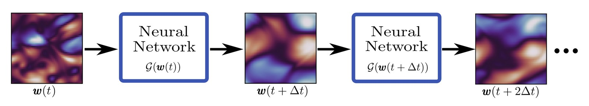
We assess the separate and combined benefits of symmetries and conservation laws for neural PDE surrogates. To this end, we construct equivariant input layers that support staggered grids, as well as output layers that enforce both equivariance and conservation laws.
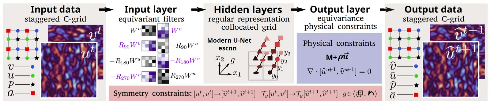
The figure above shows our framework for constructing equivariant, conservative neural surrogates, using the incompressible Navier–Stokes equations as an example: equivariance to translation and rotation, momentum conservation and a divergence-free condition (equivalent to mass conservation). Input data on staggered grids are mapped by the new equivariant input layers to convolutional channels at the grid-cell centres. All internal activations are regular representations, i.e. groups of channels indexed by the symmetry group G, on which G acts by transforming each spatial field and permuting the channels. This lets us use the existing escnn library for all linear maps between hidden layers. Finally, new output layers map the regular representation back to the staggered grid while enforcing conservation laws as hard constraints.
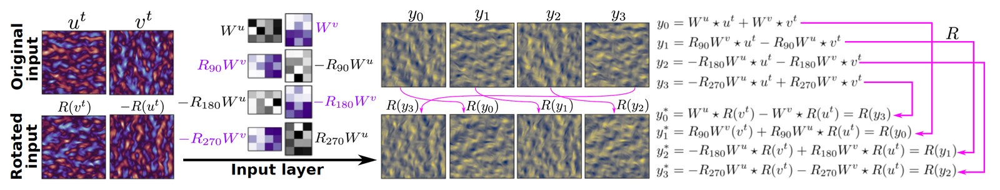
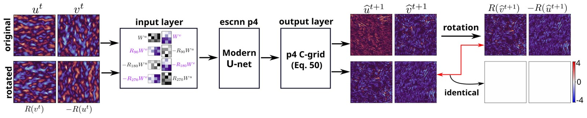
The shallow water equations (SWEs) describe quasi-static motion of a homogeneous incompressible fluid with a free surface. We study the nonlinear SWEs in momentum- and mass-conservative form; full details are given in the paper.
We use a hybrid learning strategy, based on the observation that the semi-implicit numerical scheme computes ζt+1 slowly with an iterative solver, but then obtains [ut+1, vt+1] from ζt+1 quickly through an explicit formula. The surrogates therefore predict only ζt+1, and the velocities are computed from it. Keeping parameter counts constant, we compare networks equivariant to three symmetry groups: p1 (translation only, as in standard CNNs), p4 (translation and rotation) and p4m (translation, rotation and reflection). We also compare mass-conserving networks (M) with networks without physical constraints (∅), as well as unconstrained FNO and DilResNet architectures.
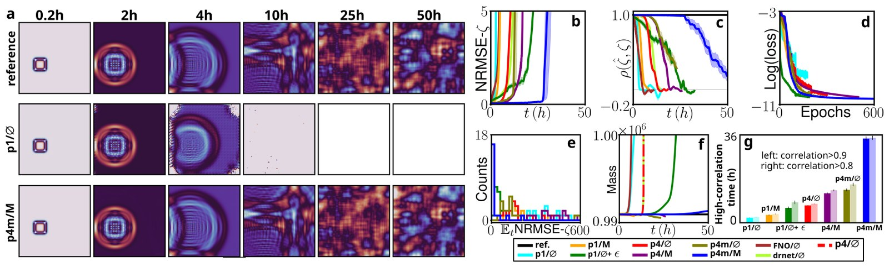
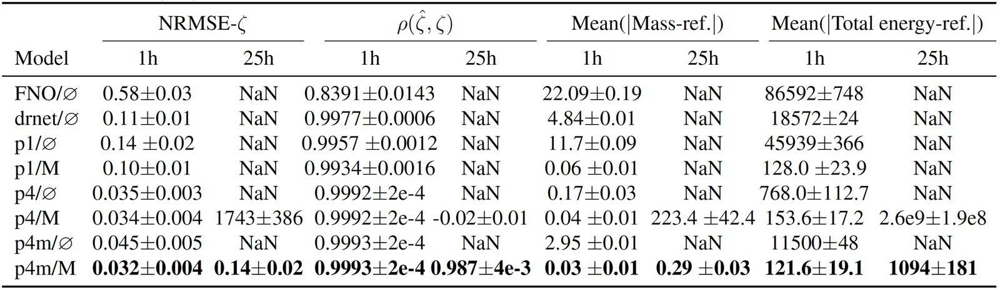
We next tested generalization to new kinds of initial conditions for closed shallow water systems. In the example below, two rectangular elevations of 0.1 m height, with random location and shape, combine into an “L” shape. Again, the maximally constrained model p4m/M outperforms the alternatives with equal parameter counts. Further generalization results are in the paper.
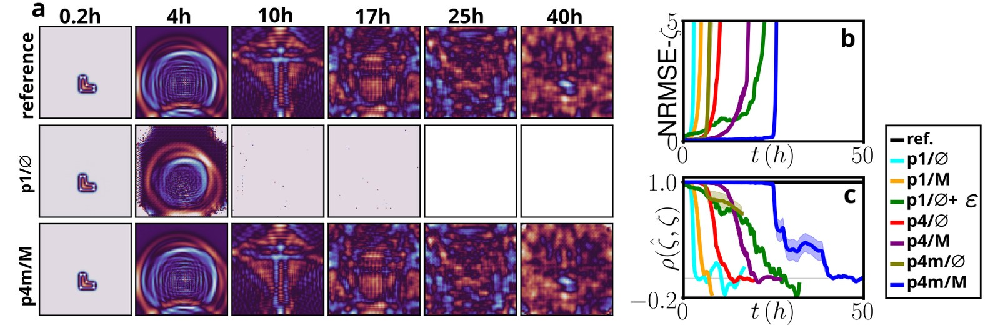
The incompressible Navier–Stokes equations (INS) describe momentum balance for incompressible Newtonian fluids. We consider the “decaying turbulence” scenario of Kochkov et al. (2021): the velocity field is initialized as filtered Gaussian noise with high spatial frequencies. Predicting its evolution is challenging, because eddy size and Reynolds number change over time as structures coalesce and the flow becomes smoother and more uniform.
Here the velocity fields [u, v] are both inputs and outputs. As for the SWEs, we test p1, p4 and p4m equivariance, now with three levels of physical constraints: unconstrained (∅), momentum conservation (ρu) and mass plus momentum conservation (M+ρu).
The figure below compares autoregressive rollouts from the unconstrained (p1/∅) and the maximally constrained (p4m/M+ρu) networks. Both types of constraints improve the accuracy and stability of the INS surrogates (panels b–c), and the best results also outperform networks trained with input noise. To evaluate the surrogates beyond the point where their predictions diverge from the reference, we compare the velocity and energy power spectra of the predicted fields, as in previous studies. We also compare the gains from symmetries and physical constraints with those of specialized training methods for PDE surrogates: data augmentation and the pushforward trick.
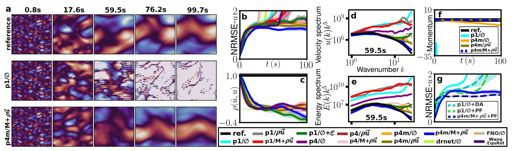
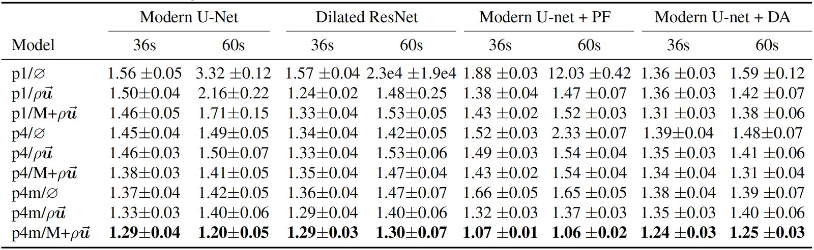
We tested the surrogates on ICs with the peak wavenumber changed from 10 to 8 or 6. Rollouts of p4m/M+ρu match the reference solver and its spectra more closely.
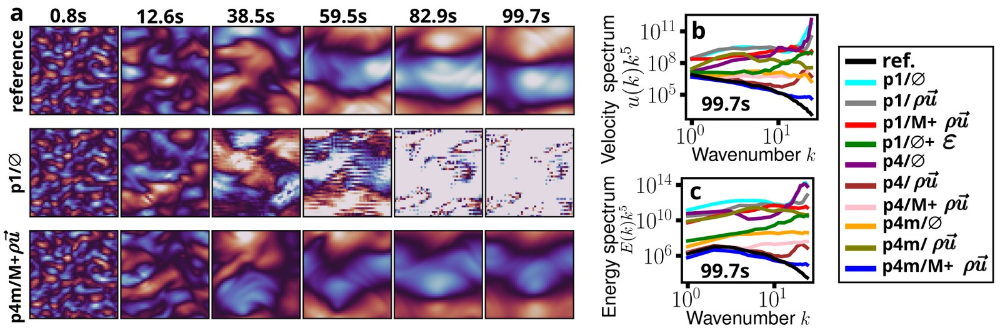
We also studied how the benefit of symmetry and physical constraints depends on network and dataset size. We trained p1/∅ and p4m/M+ρu networks with 0.1 M, 2 M and 8.5 M parameters on the same dataset (100 simulations), and 0.1 M-parameter networks on datasets of 100, 400 and 760 simulations. The constraints improved performance robustly across all network and dataset sizes.
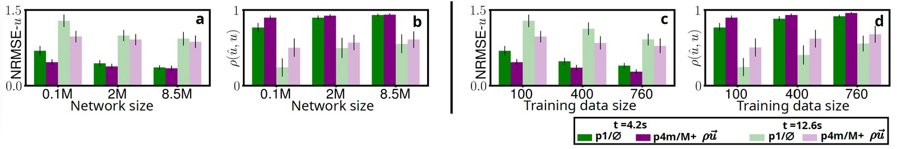
Ocean current velocities were taken from the Copernicus Global Ocean Physics Analysis and Forecast product. We used 6-hourly data from 2022-06-01 to 2025-04-05 in three regions of different oceans, with latitude/longitude ranges (30–42°, 168–180°), (−49 to −37°, 80–92°) and (−51 to −39°, −30 to −18°). The 144×144 fields were coarsened to a 48×48 grid for training, validation and testing.
After training, the models were evaluated on a region and period not seen in training: latitude −44 to −32° and longitude −130 to −118°, from 2023-06-01 to 2025-04-05.
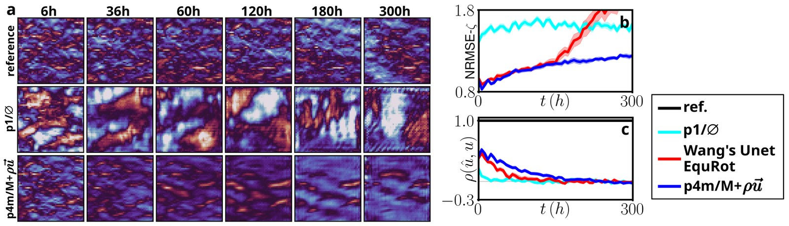
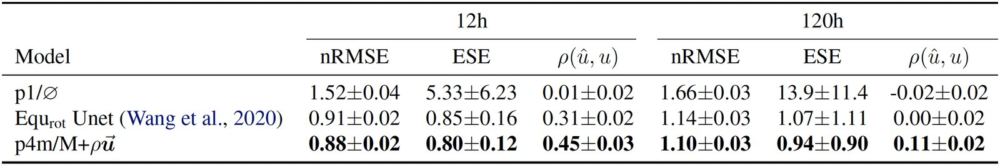
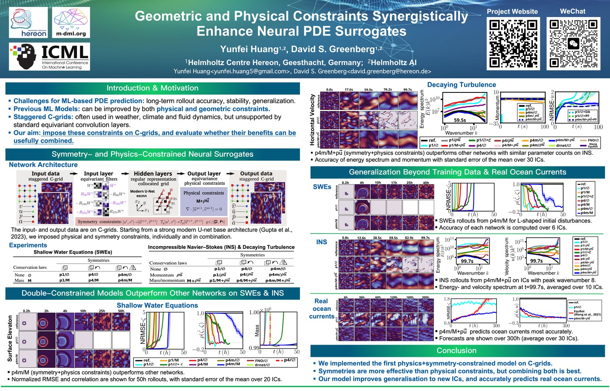
@inproceedings{huang2025geometric,
title = {Geometric and Physical Constraints Synergistically Enhance Neural PDE Surrogates},
author = {Huang, Yunfei and Greenberg, David S.},
booktitle = {Proceedings of the 42nd International Conference on Machine Learning (ICML)},
year = {2025},
publisher = {PMLR}
}